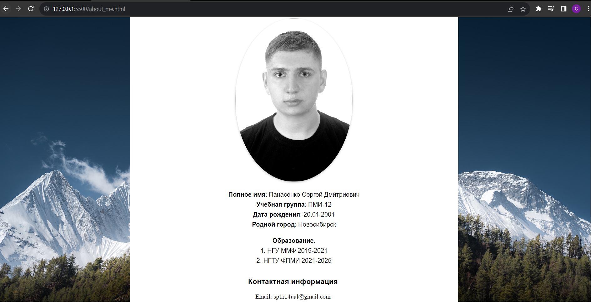

Федеральное государственнное бюджетное образовательное учреждение высшего образования
"Новосирский Государственный Технический Университет"

Кафедра теоритической и прикладной информатики
Лабораторная работа №2
по дисциплине "Основы Web-программирования"
Язык разметки HTML. Каскадные таблицы стилей CSS
| Факультет: | ФПМИ |
| Группа: | ПМИ-12 |
| Студент: | Панасенко Сергей |
| Преподаватель: | Цыгулин А. А. |
Новосибирск
2023
1. Цель работы:
Изучить язык разметки HTML. Создать веб-страницу о себе. Оформить отчёт о проделанной работе в виде HTML страницы.
2. Задание:
3. Ход работы:
Были пройдены курсы с платформы htmlacademy.ru
Кроме того, была реализована веб-страница о себе и данный отчет с использованием языка разметки HTML и каскадных стилей CSS.
